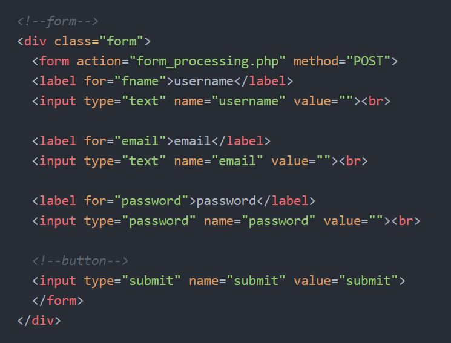
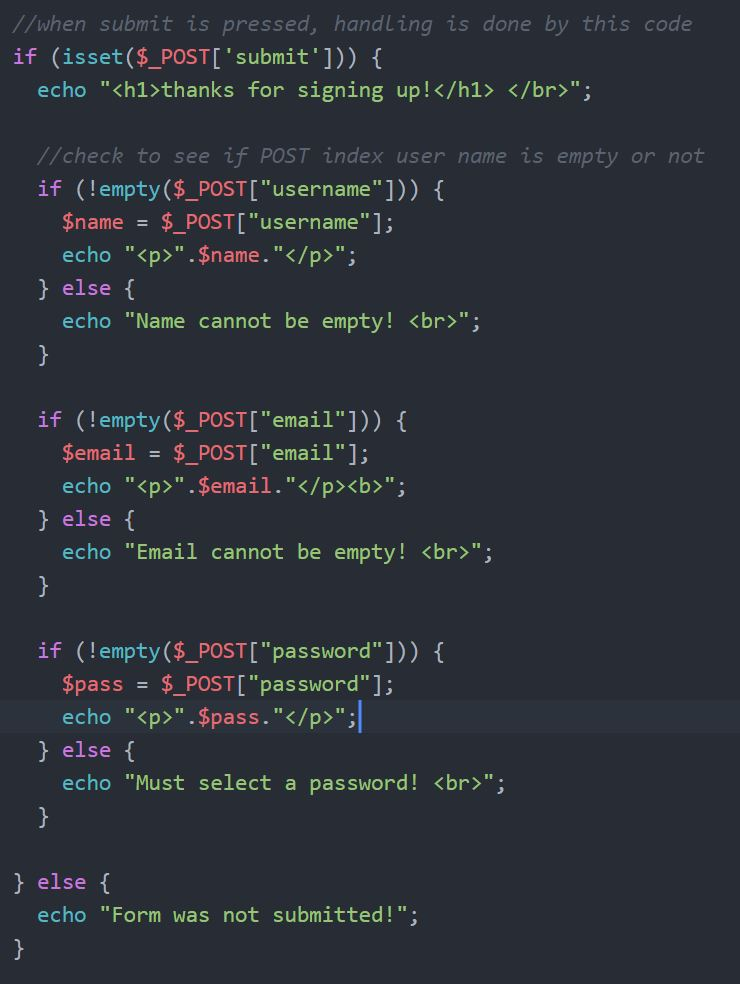
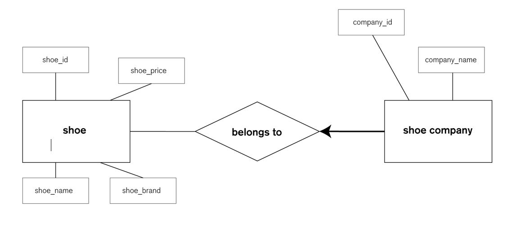
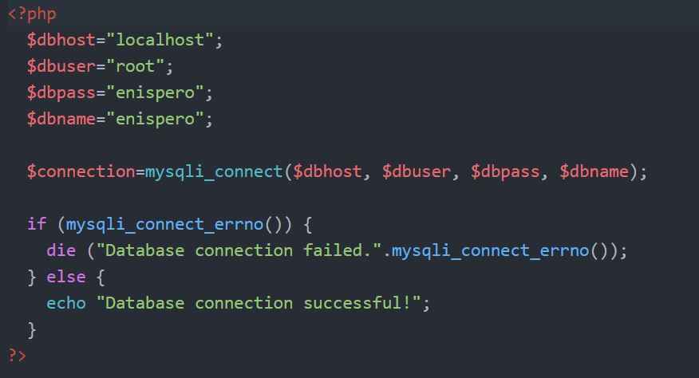
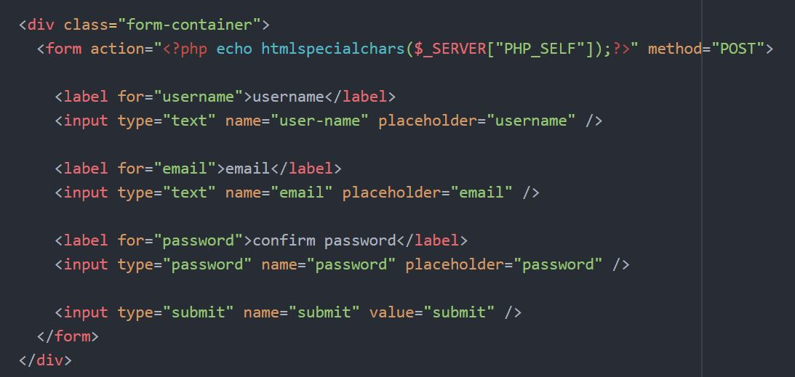
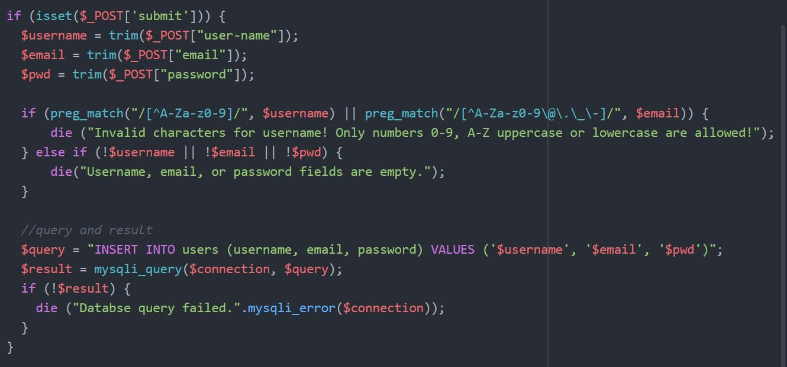
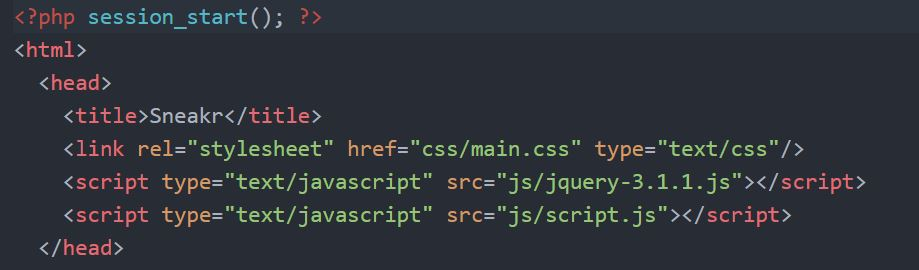
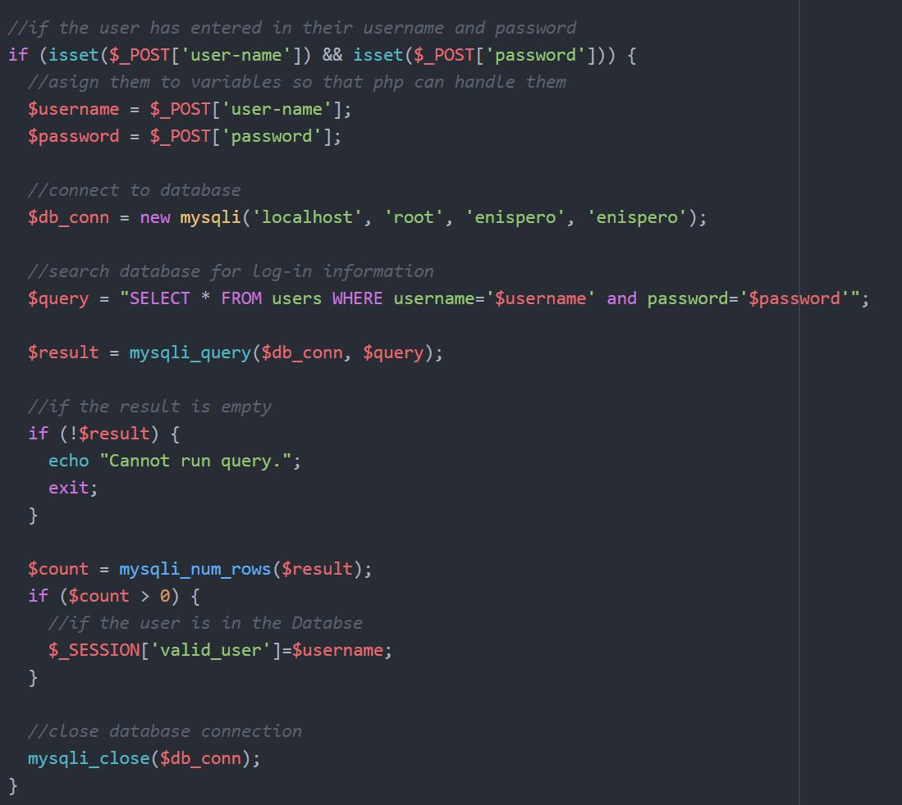
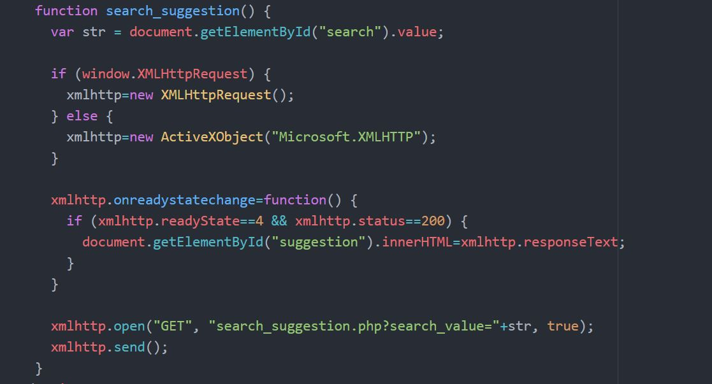

SNEAKR was an initiative, a desire to go deeper into web technologies. I wanted to create a web application that allowed me to experiment with PHP, MySQL, and AJAX. Thus, the primary objective to this project is to acquire in-depth understanding of concepts of internet technologies, listed above, and how they relate to web application development. It is also important to note that this project was approached with a technical aspect in mind, not through design. Thus, the overall aesthetic design was not priority for this project, although user experience was considered and sought after during the development of the project.
Project Goal
I wanted to create a web application that was able to hold data on an online database, a feature that is expected on all web applications today. Thus, I needed to find a way for the database to communicate with the web application, or interface, so that it can be accessed and manipulated by the user as so they please, without compromising data integrity.
Process
The project was split into three stages, where each stage consisted of a main feature that utilized the technologies listed above:
Allowing the user to register and sign in with PHP. For this stage, the PHP code should be limited to writing data in a local file, instead of an online database, which I will implement later. The purpose of this stage is to set a system where the user’s input can be captured by PHP so that it can be transmitted to an external database in later stages.
Design a database that will be used to store information from the web application. The proper tables must be created with the proper meta data to ensure that data integrity is upheld. Modify the PHP code to place and retrieve information from the database, instead of a local file. Users should be able to sign in or register using a database’s information.
Users should be able to sign in into the web application and should remain signed in when navigating through different web pages. This can be done through PHP. Finally, I will use AJAX to support predictive text and live search updates, a better system than updating a search query with a brand-new form submission, which will require the page to reload.
Register and Log-in
The first phase of the project requires the user to be able to input their information to the web application. This can be done through forms. I then utilize PHP to capture that information and to make sure that any incoming data is valid by creating a PHP script that cleanses incoming data. If the data is incorrect, then the user is required to re-enter information as required.
Form

PHP Script/Validator

Database Design

For an efficient database search, and to ensure data integrity, I created two separate data tables on MySQL that related to one another via a relationship. In this web application, the primary object users are interacting with are shoes and the meta data they bring along. Users however, might want to categorize searches based on shoe brand. Thus, a second table is created with this relationship with the first. Through this method, multiple entries of shoes can be entered into the database, without re-entering the shoe company as a data object. This can reduce load time and increase memory optimization.
Connecting to Database

I used the PHP code above to connect to the proper database. Using PHP’s “required” function allowed me to place this code in a separate file, allowing other web pages to access it if they need access to the database. A major improvement during this phase was the web page’s ability to load the information unto the same web page the user is on, without the need to resubmit the form. I also improved data validity check on the client side to ensure data integrity.


Once users can log in, they should be able to navigate through the web page without ever having to sign back in again when visiting a new web page (unless they have logged out before). As mentioned before, I used cookies, implemented through PHP to achieve this.


The code above shows how I utilized PHP to retrieve log-in data from the database to find out if the current user has registered already. If the user has been found, a session object is created. This session object assures that the user maintains their logged-in status throughout the entire web application.
Predictive Search Result
I utilized AJAX to implement a predictive search feature that updates the search results the user inputs more characters into the search bar. XMLHttpRequest allowed the web page to update without having to refresh. I wanted to include older browsers as well, hence why I included an if/else function that detected if an ActiveXObject was created instead of an XMLHttpRequest object, which means that the browser is running on an older version, or is running Internet Explorer.

Reflection
The project over all was a success. I was able to implement the features I had wanted to implement. Though looking back at the project, there were many other features I could have implemented to really push my understanding of the technologies I have learned. I could have implemented a marketplace hub where users are able to see where the shoe might be on sale, or comment on a shoe posting to advertise if they are selling on their own.